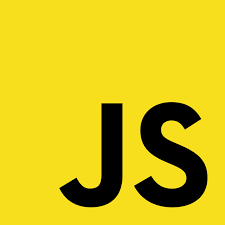
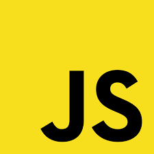

Um pouco sobre mim:
Olá, prazer! Me chamo Vinícius Maia e tenho 18 anos. Atualmente curso Análise e Desenvolvimento de Sistemas, na FIAP. Não trabalho na área de TI, mas meu maior sonho é exercer algum trabalho para essa área. Comecei a estudar tecnologia no 1º ano do Ensino Médio, quando entrei para o técnico de Informática para internet na ETEC Albert Einsten. De cara me apaixonei pelo Front-End, e fui mergulhando em diversos cursos gratuitos sobre HTML5, CSS3 e JavaScript. Hoje, tenho um conhecimento intermediário nessas linguagens, e todo dia procuro absorver mais conhecimentos sobre mais linguagens, como o python (que comecei a me dedicar esse ano).
Meus conhecimentos:

 
